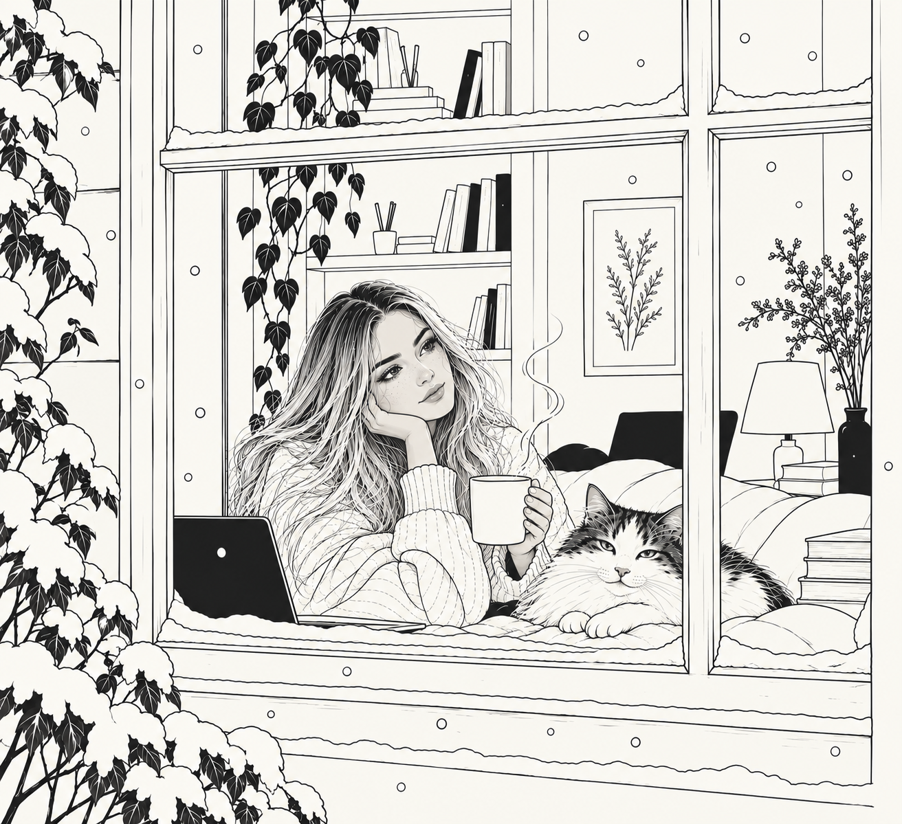

Was this situation resolved? ○ Yes ● Absolutely not
I started looking for a job. Somehow this became a story about recruiters, rejection, relocation, questionable financial decisions, several European countries, one fucking window, and a cat whose career prospects occasionally looked better than mine.
Part memoir, part recruitment satire, part ongoing European relocation disaster. Written in real time, which is convenient for the book and less convenient for me.
In 2026, I decided I needed a new job and a new country. This sounded manageable because I had experience, an EU passport, a CV, and what I believed at the time was a functioning nervous system.
Then came the applications. The recruiters. The salary fields. The interviews that became case studies. The rejections that congratulated me for being impressive while declining to employ me. Greece re-entered the chat. Poland became a personality trait. My cat, Morpheus, remained suspiciously calm.
So I started writing it down.
Some people have five-year plans. I wanted an apartment, snow outside, and one specific fucking window.
A love story in which one party has absolutely no idea the relationship exists.
There are emails you can identify from the first word.
He had no LinkedIn, no portfolio, and a five-year unexplained employment gap. Somehow, I was still worried.
I had read the About page twelve minutes earlier. The passion was overwhelming.
A story about technically speaking a language and emotionally preferring not to prove it.
You were impressive. The applicant pool was exceptional. The decision was incredibly difficult. Your background is strong. They enjoyed learning about you.translation: they just don't want you.

The ending is currently unavailable because the author has not yet successfully relocated, become employed, or found the fucking window.
Back to the suspiciously professional portfolio